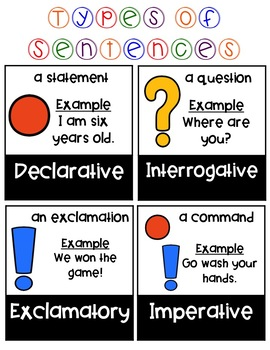

🧪 Week 7 of 35 — Unit 2: Changes in Matter
Week #: 7 of 35 (Unit 2, week 4 of 7) Dates: Oct 11 – Oct 15, 2026 | Unit: Unit 2: Changes in Matter | |
Unit Padlet
Unit 2: Grammar (From Words to Sentences)
Unit 2: Reading (Analyzing Literature)
✍️ Unit 2: Writing (Procedural Writing)
Unit 2: Explorers (Changes in Matter)
Practice Websites
Grammar Quest - Daily Oral Language
Maths Quest Pro - Master Your Math Facts!
Extra Math Resources
Unit 1: Math (Place Value and Operations)
Unit 2: Math (Measurement and Data)
Unit 4: Math (Multiplication and Division)
Unit 6: Math (Algebra, FDP, Fractions)
Class | Sunday | Monday | Tuesday | Wednesday | Thursday |
This week's updates / notes: | Materials Needed: eggs, chopped veggies, salt/pepper (Optional Toast/Jam) Mon: HBKU @ 9:40am Some lessons have been transferred over from the previous week due to time. Grey italic text = added in the October 2026 template update (not in the original plan). | No notes for this day. | No notes for this day. | No notes for this day. | No notes for this day. |
Morning Meeting / SEL | Week #3 SEL Lesson — decide which day you prefer to do this lesson. THEME: KINDNESS 5A- Individual Activity to Whole Group Meeting 5B- One to One Enrichment 5C- Morning Worksheets PLG: Collaborator, Respectful, Communicator SEL- Kindness | Week #3 SEL Lesson — decide which day you prefer to do this lesson. THEME: KINDNESS 5A- Individual Activity to Whole Group Meeting 5B- One to One Enrichment 5C- Morning Worksheets PLG: Collaborator, Respectful, Communicator SEL- Kindness | Week #3 SEL Lesson — decide which day you prefer to do this lesson. THEME: KINDNESS 5A- Individual Activity to Whole Group Meeting 5B- One to One Enrichment 5C- Morning Worksheets PLG: Collaborator, Respectful, Communicator SEL- Kindness | Week #3 SEL Lesson — decide which day you prefer to do this lesson. THEME: KINDNESS 5A- Individual Activity to Whole Group Meeting 5B- One to One Enrichment 5C- Morning Worksheets PLG: Collaborator, Respectful, Communicator SEL- Kindness | Week #3 SEL Lesson — decide which day you prefer to do this lesson. THEME: KINDNESS 5A- Individual Activity to Whole Group Meeting 5B- One to One Enrichment 5C- Morning Worksheets PLG: Collaborator, Respectful, Communicator SEL- Kindness |
Literacy: Vocabulary & Spelling Standards | CC L.5.4, L.5.6 · EE.L.5.4, EE.L.5.6 | CC L.5.4, L.5.6, L.5.2.E, RF.5.3 · EE.L.5.4, EE.L.5.6, EE.L.5.2.H, EE.RF.5.3 | CC L.5.4, L.5.6 · EE.L.5.4, EE.L.5.6 | CC L.5.4, L.5.6 · EE.L.5.4, EE.L.5.6 | CC L.5.4, L.5.6, L.5.2.E, RF.5.3 · EE.L.5.4, EE.L.5.6, EE.L.5.2.H, EE.RF.5.3 |
Literacy: Vocabulary & Spelling Activities/Tasks (Differentiation) Routine: give the definition first (no guessing) → students share where they might use it, similar/different words. Morphology, examples/non-examples, synonyms/antonyms & more on the vocabulary cards: Vocabulary Padlet (incl. Spelling: words Mon · test Thu) | G5: interval — A period of time between two events or actions. G3: notion — A general understanding, belief, or idea about something. Unit: interesting — Arousing curiosity or attention; holding one's interest. | G5: eventually — In the end; after a period of time or a series of events. G3: indicate — To point out or show something; to be a sign of. Unit: laboratory — A room or building equipped for scientific experiments, research, or testing. Spelling — introduce Week 7 lists (practice all week). Low (Building Spelling Skills, List 7): no, go, going, most, kind, find, gave, so, do, doing High (Building Spelling Skills, List 7): blush, crutch, crunch, grumpy, much, umpire, uncle, none, does, fuel, cute, cubicle, human, future, usual, uniform, used, beautiful | G5: consecutive — Following one after another without interruption. G3: drift — To be carried slowly by a current of air or water. Unit: persevere — To continue doing something even when it is difficult or takes a long time. | G5: chronological — Arranged in the order of time, from earliest to latest. G3: portion — A part or share of something larger; an amount of food served to one person. Unit: comprehensive — Including or dealing with all or nearly all aspects of something; complete. | G5: simultaneous — Happening or done at the same time. G3: vast — Extremely large in area, size, or amount. Unit: precise — Exact and accurate in every detail. |
Literacy: Vocabulary & Spelling Assessment (Differentiation) | Quick check: Use today's word in a spoken or written sentence. Low: match the word to a picture or definition. Mid: complete a sentence frame. High: write an original sentence. | Quick check: Use today's word in a spoken or written sentence. Low: match the word to a picture or definition. Mid: complete a sentence frame. High: write an original sentence. | Quick check: Use today's word in a spoken or written sentence. Low: match the word to a picture or definition. Mid: complete a sentence frame. High: write an original sentence. | Quick check: Use today's word in a spoken or written sentence. Low: match the word to a picture or definition. Mid: complete a sentence frame. High: write an original sentence. | |
Literacy: Reading Standards | CC RF.5.3, RL.5.3 · EE.RF.5.3, EE.RL.5.3 | CC RL.5.3 · EE.RL.5.3 | CC RF.5.3, RL.5.3 · EE.RF.5.3, EE.RL.5.3 | CC RL.5.2, RL.5.3 · EE.RL.5.2, EE.RL.5.3 | CC RF.5.3, RL.5.3 · EE.RF.5.3, EE.RL.5.3 |
Literacy: Reading Activities/Tasks (Differentiation) | Phonics: Teach the Bossy R / R-Controlled Vowels — BrainPOP Jr video · Jack Hartmann's Bossy R · Everyday Play and Say
SeeSaw: Compound Words (analytical) · Controlled R · Controlled R (Easy) Guided Reading — Character Traits. Materials: short story or excerpt (from a class book or a provided short text); chart or board. Introduction (3 min): define character traits as qualities that describe what a character is like on the inside (e.g., brave, selfish, kind). Ask students to describe someone from a favorite book or movie using a few traits. Guided practice (7 min): read a short passage featuring a main character; list the character's traits on the board and ask students for evidence from the text (what the character says, does, or thinks). Independent practice (5 min): students pick one character and list two traits with a supporting example from the text in their notebooks. Closing (1 min): recap — character traits describe who a character is based on thoughts, actions, and words. Rotations (stations for the week): SeeSaw: Story Elements Quiz · Story Elements · Story Elements (Lower Level) · Lower Level Story Elements · Story Elements Sort IXL: G3 Story Elements · G4 Story Elements · G5 Story Elements Google Classroom: KAMI WS folder · Worksheets4Kids Boom Cards: Story Elements Claude: Story Elements RazKids, EPIC, Book Bag | Guided Reading — Character Motivation. Materials: same story/excerpt as Sunday. Introduction (3 min): motivation is what pushes a character to act — what a character wants or needs. Example: if a character steals food, their motivation might be hunger. Modeling (5 min): look at a scene from the story and ask, "Why did the character do this?" If a character helped someone, their motivation might be kindness or wanting to make a new friend. Guided practice (5 min): read another short passage; students identify the character's action and discuss why the character acted that way, supported with evidence from the text. Closing (2 min): understanding a character's motivation helps us understand their actions and the story. Rotations: see the station list from Sunday or the differentiation row below. | Phonics: SeeSaw Controlled R Bossy Finger Game — read a word list aloud, some with bossy "r" and some without; students point a bossy finger when the "r" is bossy. Words: jar, art, farm, store, corn, orange, dirt, stir, girl, turn, fur, hurt, germ, her. Guided Reading — Character Relationships. Materials: same story/excerpt as previous days. Introduction (3 min): characters have relationships with other characters (friends, family, enemies) that help us understand them better. Modeling (5 min): pick two characters and explain their relationship and how it affects the story's events (e.g., "These two are friends and help each other — this shows they are loyal"). Guided practice (5 min): students think of how two characters interact and how their relationship affects the plot; share ideas with the class. Closing (2 min): understanding relationships helps us see how characters grow and how they affect the plot. Rotations: see Sunday's station list or the differentiation row below. | Guided Reading — Character Development & Theme. Materials: same story/excerpt as previous days. Introduction (3 min): as a story progresses, characters can change or learn something new — character development. The character's growth often connects to the theme (message) of the story. Modeling (5 min): discuss how the character changed from beginning to end. Example: "At first the character was afraid of the dark, but by the end they were brave — the message might be about overcoming fear." Guided practice (5 min): students think about how the main character changed and what they learned; guide them to connect this change to the theme or message. Closing (2 min): character development is important because it helps convey the story's message or theme. Rotations: see Sunday's station list or the differentiation row below. Differentiation: Teacher should choose from the variety of above activities to best suit students' abilities. | Phonics: Bossy R Kahoot Guided Reading: Review / catch-up. Rotations: see Sunday's station list or the differentiation row below. Differentiation: Teacher should choose from the variety of above activities to best suit students' abilities. |
Literacy: Reading Assessment (Differentiation) | Exit check: name one character trait and one detail from the text that shows it. Low: choose a trait from a picture word bank. Mid: use the frame "___ is ___ because ___." High: write two traits, each with text evidence. | Informal Observations | Informal Observations | Informal Observations | Exit check: Short task on today's focus: read and comprehend grade-band literature and informational text. Low: point to or say the answer with picture/word-bank support. Mid: answer with a sentence frame. High: write a short answer using evidence from the text. |
Literacy: Writing / Language Standards (Language Sun & Tue · Writing Mon & Wed · Thu catch-up) | CC L.5.2.A · EE.L.5.2.A | CC W.5.2, W.5.7 · EE.W.5.2, EE.W.5.7 | CC L.5.2.A · EE.L.5.2.B | CC W.5.2, W.5.4 · EE.W.5.2, EE.W.5.4 | CC L.5.2.A, W.5.2, W.5.4, W.5.7 · EE.L.5.2.A, EE.L.5.2.B, EE.W.5.2, EE.W.5.4, EE.W.5.7 |
Literacy: Writing / Language Activities/Tasks (Differentiation) IXL this week: Low: Capitalize days and months (G1) High: Capitalizing days, months, and holidays (G2) Stretch: Capitalizing days, months, and holidays (G4) · Abbreviate days of the week and months of the year (G5) | Grammar (Sun) — Capitalization — Dates, Days, Months & Holidays OBJ: Capitalize names of days, months, and holidays consistently Packets — Low (K-1): K: Review: Capitalization (apply to calendar words), G1: L2.5 Cap Days and Months · Mid (2-3): G2: L2.5 Cap Days, Months, and Holidays, G3: L2.4 Cap Dates and Holidays · High (4-6): G4: L2.3 Cap Dates and Holidays, G5: L2.1 Proper Nouns — Cities/States/Countries, G5: L2.2 Proper Nouns — Days/Months, G6: L2.1 Proper Nouns — Days of the Week/Months of Year K: use classroom calendar. Grammar anchor charts / resources (from the 2025-26 plan): Independent Practice (10 minutes): Ask students to write two declarative and two interrogative sentences in their notebooks.  Moved here from Reading: Language links: Punctuation G1-2 · Types of Sentences · Types of Sentences #2 · Types of Sentences #3 · Punctuation · Punctuation 2 · G4 Types of Sentences · G6 Types of Sentences · G3 Subjects & Predicates · G5 Subjects & Predicates · G6 Subjects & Predicates · Types of Sentences · Complete or Incomplete Sentences EPIC: How to Read a Recipe — discuss the elements of a recipe and point them out in the text (Introduction/Title, Materials/Ingredients, Method, Conclusion). | Writing — Choose the Science-Fair experiment; plan it Connect the unit to the Science Fair: students pick their experiment, brainstorm Materials, and list steps in order on a planning organizer — talking the experiment through aloud first. Grammar link: end marks — a full stop closes each step. TWR: the planning organizer is a key-word outline — Materials and steps as dot jots only (2-3 words); no full sentences today, ideas first. Resources: Procedural Texts PPT (Padlet) — word banks: command verbs, time connectives IXL: Choose the right end mark (G1) — Order the words to create a sentence (G3) — Stretch: G4 — G5 Moved here from Reading: Use these mentor texts to talk about transitional words (link was embedded in an image in the old 25-26 plan).
Writing resources (from the 2025-26 plan):
| Grammar (Tue) — End Punctuation — Periods OBJ: Place periods after statements and imperatives and in abbreviations Packets — Low (K-1): K: L3.4 Periods, G1: L2.6 Periods · Mid (2-3): G2: L2.6 Periods, G2: L2.9 Periods in Abbreviations, G3: L2.6 Periods · High (4-6): G4: L2.5 Periods, G5: L2.8 Periods — Declarative/Imperative/Dialogue, G5: L2.9 Periods — Abbreviations/Initials/Titles, G6: L2.7 Periods — Imperative/Dialogue/Abbreviations/Initials Every sentence from Week 1 needs a period. Moved here from Reading: Adaptation: for students who need more support, provide word lists to practice with before they start creating their sentences. | Writing — Draft the Method section Model turning the planning organizer into numbered Method steps; students write their experiment steps with command verbs and time connectives — a reader should be able to repeat the experiment and get the same result. TWR: jot to sentence — each key-word jot becomes one complete command sentence (verb first); per-step check: command verb? complete sentence a classmate could follow? Differentiation: Low/Med order a pre-written set of steps then copy; High adds a "watch out" tip to a tricky step. Resources: co-built rubric (mid-point self-check) — word banks: command verbs, time connectives | Catch-up day — reteach or extend this week's grammar and writing; finish unfinished drafts; assign this week's IXL practice (links in the left column: Low = reteach, High = consolidate, Stretch = extension). |
Literacy: Writing / Language Assessment (Differentiation) | Moved here from Reading: SeeSaw — How to Make Eggs in a Mug Language check: Write 3 to 5 sentences that apply today's rule; use this week's IXL skill. Low: K-1 packet page with teacher support. Mid: Grades 2-3 packet page. High: Grades 4-6 packet page or IXL Stretch. | Writing check: Check today's writing against the co-built rubric (one target from today's lesson). Low: oral rehearsal first, then a sentence frame or labelled picture. Mid: word bank and a partner check. High: independent, plus one stretch goal. | Language check: Write 3 to 5 sentences that apply today's rule; use this week's IXL skill. Low: K-1 packet page with teacher support. Mid: Grades 2-3 packet page. High: Grades 4-6 packet page or IXL Stretch. | Writing check: Check today's writing against the co-built rubric (one target from today's lesson). Low: oral rehearsal first, then a sentence frame or labelled picture. Mid: word bank and a partner check. High: independent, plus one stretch goal. | Moved here from Reading: Have students list the parts of a procedure writing piece |
Math Standards (pacing W06, from the Awsaj Math Curriculum) | STANDARD 1. Introduction to long division: 5.NBT.B.6 (EE: M.EE.5.NBT.6) 2. Long division with remainders: 5.NBT.B.6 (EE: M.EE.5.NBT.6) 3. Solve problems with division: 5.NBT.B.6 (EE: M.EE.5.NBT.6); 4.OA.A.3 (EE: M.EE.4.OA.3) 4. Factors: 4.OA.B.4 (EE: M.EE.4.OA.4) 5. Solve problems with multiplication: 5.NBT.B.5 (EE: M.EE.5.NBT.5); 4.OA.A.3 (EE: M.EE.4.OA.3) | PRIORITY 1. Short division: 5.NBT.B.6 (EE: M.EE.5.NBT.6) 2. Division using factors: 5.NBT.B.6 (EE: M.EE.5.NBT.6); 3.OA.B.5 3. Introduction to long division: 5.NBT.B.6 (EE: M.EE.5.NBT.6) | INTERVENTION 1. Solve problems with multiplication: 5.NBT.B.5 (EE: M.EE.5.NBT.5); 4.OA.A.3 (EE: M.EE.4.OA.3) 2. Short division: 5.NBT.B.6 (EE: M.EE.5.NBT.6) | ||
Math Activities/Tasks (Differentiation) Pacing W06 · B2 Addition, subtraction, multiplication and division W03–W08 | STANDARD · ~4 new / wk 1. Introduction to long division 5.NBT.B.6 ▶ VIDEO · GUIDE · SLIDES · PPT · LESSON · SHEET · DISPLAY · ANSWERS · T/F · PRE-TEACH · TA SHEET · TA ANS · TRANSCRIPT 2. Long division with remainders 5.NBT.B.6 ▶ VIDEO · GUIDE · SLIDES · PPT · LESSON · SHEET · DISPLAY · ANSWERS · T/F · PRE-TEACH · TA SHEET · TA ANS · TRANSCRIPT 3. Solve problems with division 5.NBT.B.6 4.OA.A.3 ▶ VIDEO · GUIDE · SLIDES · PPT · LESSON · SHEET · DISPLAY · ANSWERS · T/F · PRE-TEACH · TA SHEET · TA ANS · TRANSCRIPT 4. Factors 4.OA.B.4 ▶ VIDEO · GUIDE · SLIDES · PPT · LESSON · SHEET · DISPLAY · ANSWERS · T/F · PRE-TEACH · TA SHEET · TA ANS · TRANSCRIPT 5. Solve problems with multiplication 5.NBT.B.5 4.OA.A.3 ▶ VIDEO · GUIDE · SLIDES · PPT · LESSON · SHEET · DISPLAY · ANSWERS · T/F · PRE-TEACH · TA SHEET · TA ANS · TRANSCRIPT 1× support block — pick from the panel below Differentiation: Each lesson includes partner practice, common misconceptions, independent practice, and challenge questions for differentiation. | PRIORITY · ~3 new / wk 1. Short division 5.NBT.B.6 ▶ VIDEO · GUIDE · SLIDES · PPT · LESSON · SHEET · DISPLAY · ANSWERS · T/F · PRE-TEACH · TA SHEET · TA ANS · TRANSCRIPT 2. Division using factors 5.NBT.B.6 3.OA.B.5 ▶ VIDEO · GUIDE · SLIDES · PPT · LESSON · SHEET · DISPLAY · ANSWERS · T/F · PRE-TEACH · TA SHEET · TA ANS · TRANSCRIPT 3. Introduction to long division 5.NBT.B.6 ▶ VIDEO · GUIDE · SLIDES · PPT · LESSON · SHEET · DISPLAY · ANSWERS · T/F · PRE-TEACH · TA SHEET · TA ANS · TRANSCRIPT 1× support block — pick from the panel below Differentiation: Each lesson includes partner practice, common misconceptions, independent practice, and challenge questions for differentiation. | INTERVENTION · ~2 new / wk 1. Solve problems with multiplication 5.NBT.B.5 4.OA.A.3 ▶ VIDEO · GUIDE · SLIDES · PPT · LESSON · SHEET · DISPLAY · ANSWERS · T/F · PRE-TEACH · TA SHEET · TA ANS · TRANSCRIPT 2. Short division 5.NBT.B.6 ▶ VIDEO · GUIDE · SLIDES · PPT · LESSON · SHEET · DISPLAY · ANSWERS · T/F · PRE-TEACH · TA SHEET · TA ANS · TRANSCRIPT 2× support block — pick from the panel below Differentiation: Each lesson includes partner practice, common misconceptions, independent practice, and challenge questions for differentiation. | ||
Math: Support Block Activities/Tasks (pick one) | Rec/PK4 · Doubles to 10 (make a double) · Y1/KG · Fact families - the eight facts · Y2/Gr.1 · Add and subtract 10s · Y3/Gr.2 · Subtract a 2-digit number from a 3-digit number · Y4/Gr.3 · Divide a 3-digit number by a 1-digit number · Y5/Gr.4 · Multiples · Y5/Gr.4 · Factors · Y5/Gr.4 · Multiply a 3-digit number by a 2-digit number · Y5/Gr.4 · Short division · Y5/Gr.4 · Divide a 4-digit number by a 1-digit number · Y5/Gr.4 · Divide with remainders · Y5/Gr.4 · Efficient division · Y5/Gr.4 · Solve problems with multiplication and division | ||||
Math Assessment (Differentiation) | Pre-check: Quick pre-check on this week's skills (IXL formative pre-test or 3 questions from the first lesson). | Exit check: 2 to 3 questions from each strand's SHEET or T/F slide at the end of the lesson. Intervention: with the TA sheet and concrete materials. Priority: partner then independent. Standard: independent plus the challenge question. | Exit check: 2 to 3 questions from each strand's SHEET or T/F slide at the end of the lesson. Intervention: with the TA sheet and concrete materials. Priority: partner then independent. Standard: independent plus the challenge question. | Exit check: 2 to 3 questions from each strand's SHEET or T/F slide at the end of the lesson. Intervention: with the TA sheet and concrete materials. Priority: partner then independent. Standard: independent plus the challenge question. | IXL Formative Assessment |
Science and/or Social Studies Standards Explore | 5-PS1-3, 5-PS1-4, 5-ETS1-3 | 5-ETS1-3 | 5-ETS1-3 | 5-ETS1-3 | 5-ETS1-3 |
Activities/Tasks (Differentiation) Explore 3-day plan (Mon–Wed) Choose & Plan Your Project IXL this week: Low: Read a Thermometer (Gr 3) · High: Collect & Graph Temperature Data (Gr 4) Stretch: Identify Laboratory Tools (Gr 5) · Predict Temperature Changes (Gr 4) | Review / catch-up — revisit last week's Explorer learning; finish unfinished investigations or SeeSaw posts; preview this week's topic. | Mon · Explore + Choose: Pick Your Science Fair Question 1. Hook — Show a finished example project (last year's egg-float investigation) on the Science Fair Presentation Template so students see what the finished product looks like. 2. Browse ideas — In pairs, browse the Ideas for Science Fair handout (12 tested project ideas: slime, dissolving eggshells, Mentos & soda, pipe-cleaner circuits, rusting steel wool, invisible ink, Alka-Seltzer, chalk & vinegar, penny oxidation, baking powder vs. soda, milk-and-vinegar plastic, tie-dye) or propose an original idea connected to states of matter or changes in matter. 3. Choose — Each student picks a question and states it in “How does ___ affect ___?” form. 4. Start planning — Begin Step 1 of the Project Planning Worksheet: Developing Your Question. 5. Teacher check — Teacher approves each question before students move on. Objective: Can state a testable science-fair question connected to states of matter or changes in matter. | Tue · Plan Your Fair Test: Variables & Hypothesis 1. Review — Revisit yesterday's chosen questions; recall the fair-test rule (change one thing, keep the rest the same). 2. Teach — Identify the independent variable (what you change) and dependent variables (what you measure — aim for at least 3 things to observe, e.g. colour, time, size). 3. Complete — Step 2 of the Project Planning Worksheet: Variables and Measurement (independent variable, dependent variables, constants). 4. Write — Draft a hypothesis in IF…THEN…BECAUSE form (Step 3 of the worksheet). 5. Share — Pairs check each other's hypotheses: is it testable? Does it explain why? Objective: Can identify an independent variable and at least 3 dependent variables, and write a testable hypothesis. | Wed · Finalize Your Plan: Materials, Procedure & Safety 1. Review — Revisit variables and hypothesis from yesterday. 2. Complete — Steps 4–6 of the Project Planning Worksheet: materials needed, safety considerations, data-collection plan, and timeline. 3. Write — Draft the numbered procedure step-by-step, using the Science Fair Presentation Template's Procedure slide as a model — enough detail that someone else could repeat it. 4. Teacher sign-off — Teacher approves the finished plan. 5. Send home — Send home the Science Fair Prep Letter and the Parent Note (Tri-Board) so families know what to gather and bring in. Objective: Can list the materials, safety steps, and a clear numbered procedure for their investigation. Resources — New Materials – Science Fair Prep Letter · New Materials – Parent Note (Tri-Board) | Review / catch-up — consolidate Mon–Wed learning; complete recordings/reflections; reteach or extend as needed. |
Assessment (Differentiation) Explore | Review check: Students explain one thing they learned last week about fair tests and the Science Fair template, using a key word from the unit. Low: point and say with a picture. Mid: sentence frame. High: written explanation. | Assessment: State the research question in “How does ___ affect ___?” form. Differentiation: Choose from 2 teacher-picked options with support / choose from the full list independently / design an original question independently. | Assessment: Name the independent variable and 3 things you will measure; state a hypothesis using the sentence frame. Differentiation: Identify variables with a sentence-starter bank / with some support / independently. | Assessment: Procedure is written in clear, numbered, repeatable steps. Differentiation: Use a procedure sentence frame with support / with some support / write independently. | Review check: Students explain one thing they learned in Explore this week, using a key word from the unit. Low: point and say with a picture. Mid: sentence frame. High: written explanation. |
Closing Circle (SELG) | Closing circle: students reflect on today's learning and the week's PL goal. | Closing circle: students reflect on today's learning and the week's PL goal. | Closing circle: students reflect on today's learning and the week's PL goal. | Closing circle: students reflect on today's learning and the week's PL goal. | Closing circle: students reflect on today's learning and the week's PL goal. |